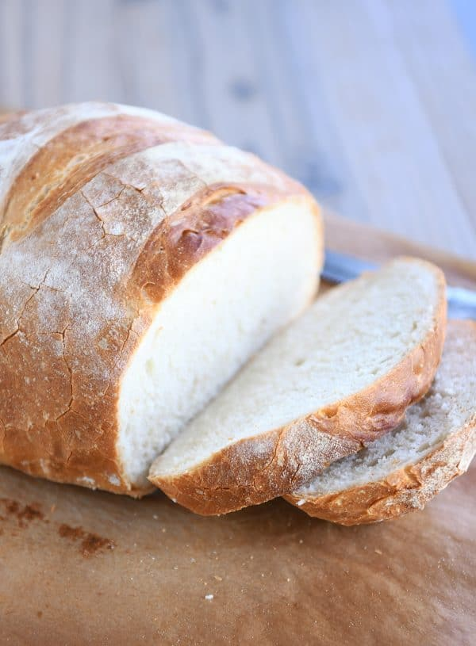

Bread

Ingredients
- 1 cup warm water
- 2 tablespoons white sugar
- 0.25 ounce yeast
- 1/4 cup vegetable oil
- 3 cup bread flour
- 1 tablespoon salt
Directions
- Place water, sugar, and yeast in the pan of the bread machine. Let yeast dissolve and foam for 10 minutes. Add oil, flour, and salt to the yeast. Select Basic or White Bread setting, and press Start.
- Remove loaf from the machine after the cycle is done; cool in the pan for 5 minutes before turning it out onto a rack to cool completely.
Return to home
Home page